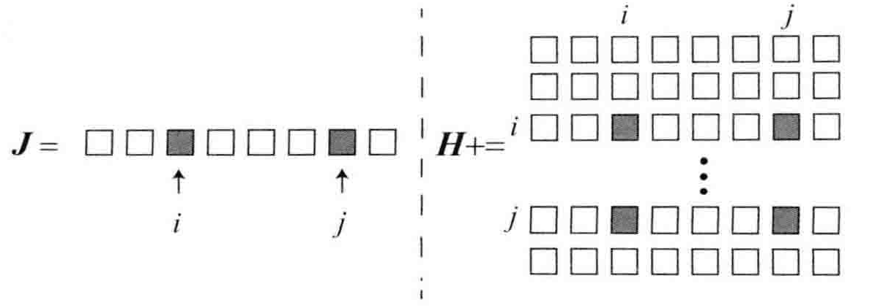
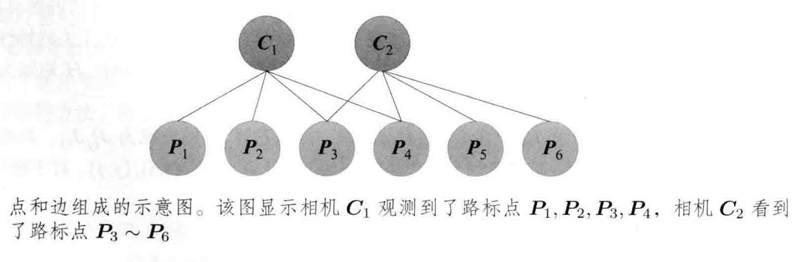
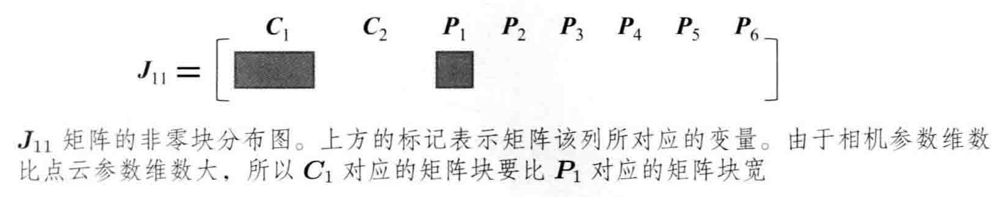
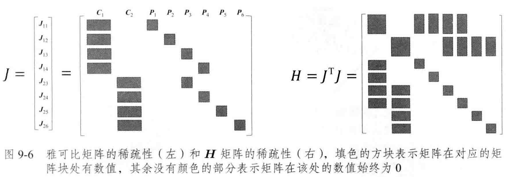
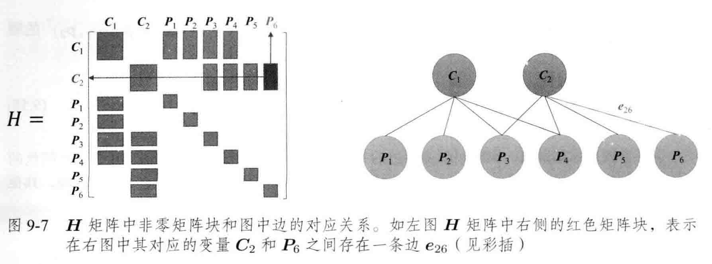
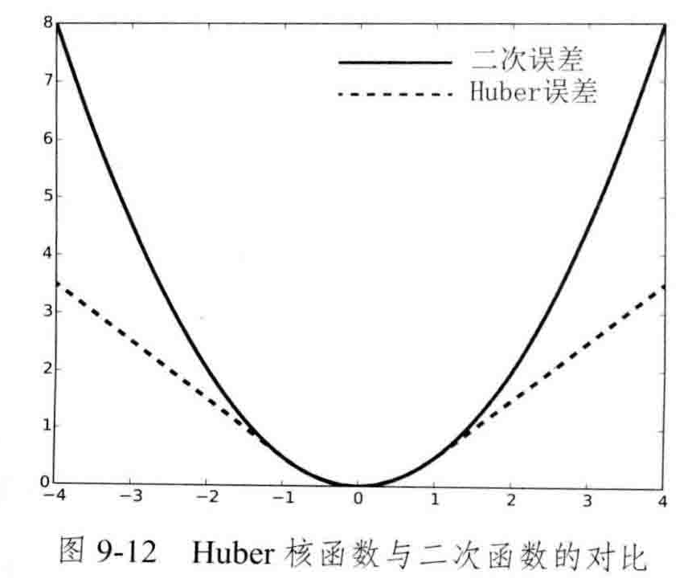

slam
后端
状态估计概率解释
视觉里程计只有短暂记忆，而我们希望整个运动轨迹在较长时间内都能保持最优的状态。用最新的知识更新较久远的状态。这是个状态估计问题。
假设$t=0$到$t=N$时间内，有位姿$x_0$到$x_N$，并有路标$y_0$，…，$y_M$，运动方程和观测方程为
特点：
- 运动方程数量小于甚至远小于观测方程
- 没有运动方程相当于通过一组时序图像来恢复运动和结构
方程中的位姿$\vec{x}$和路标$\vec{y}$受噪声影响，所以应该看成服从某种概率分布的随机变量，而不是一个数。
状态估计中的观测量和状态量：
重新定义状态量：$\vec{x}_k\overset{def}{=}\{\vec{x}_k,\vec{y}_1,\cdots,\vec{y}_m\}$表示k时刻状态量$\vec{x}_k$由k时刻位姿$\vec{x}_k$及$m$个路标$\vec{y}_*$组成。
重新定义观测数据：$\vec{z}_k\overset{def}{=}\{\vec{z}_{k,1},\cdots,\vec{z}_{k,m}\}$表示k时刻对m个路标的观测数据
新的运动和观测方程
$k$时刻状态量几率函数用$0$到$k$时刻的观测量来估计，即后验分布记为$P(\vec{x}_k|\vec{x}_0,\vec{u}_{1:k},\vec{z}_{1:k})$, 这里$\vec{u}_{1:k}=\{\vec{u}_1,\vec{u}_2,\cdots,\vec{u}_k\}$，$\vec{z}_{1:k}=\{\vec{z}_1,\vec{z}_2,\cdots,\vec{z}_k\}$，根据贝叶斯法则，将后验分布分解成似然分布和先验分布的乘积
先验分布是基于过去所有状态估计得来，简化只受到$\vec{x}_{k-1}$影响，联合分布$P(\vec{x}_k，\vec{x}_{k-1}|\vec{x}_0,\vec{u}_{1:k},\vec{z}_{1:k-1})$对$\vec{x}_{k-1}$积分得到边缘分布$P(\vec{x}_k|\vec{x}_0,\vec{u}_{1:k},\vec{z}_{1:k-1})$即先验分布，联合分布可以通过条件概率公式转化为$\vec{x}_{k-1}$的条件概率形式，即$P(\vec{x}_k|\vec{x}_{k-1},\vec{x}_0,\vec{u}_{1:k},\vec{z}_{1:k-1})P(\vec{x}_{k-1}|\vec{x}_0,\vec{u}_{1:k},\vec{z}_{1:k-1})$，因此先验分布可以表示成：
先验分布的处理方式：
线性系统和卡尔曼滤波（KF）
根据k时刻状态$\vec{x}_k$的分布只和k-1时刻的状态$\vec{x}_{k-1}$有关，所以可以去掉$\vec{x}_{0:k-2}$这些状态量，k时刻状态量$\vec{x}_k$和k时刻运动输入量$\vec{u}_k$以及观测量$\vec{z}_k$有关和其它时刻没关系，公式$\ref{eq:xianyan}$中右侧第一部分可简化为
由于k-1时刻状态量$\vec{x}_k$还是按照和之前状态都有关的假设，公式$\ref{eq:xianyan}$中右侧第二部分可简化为
公式$\ref{eq:k-1zhuang_tai_liang}$就是k-1时刻的状态分布。
线性高斯系统
将公式$\ref{eq:kinemic_and_observation}$中的运动方程和观测方程按照线性函数的形式展开
运动噪声和观测噪声都服从0均值正态分布：
记号区分：上帽子$\hat{\vec{x}}_k$表示后验，下帽子$\check{\vec{x}}_k$表示先验
已知k-1时刻的后验状态估计为$\hat{\vec{x}}_{k-1}$及其协方差$\hat{P}_{k-1}$，状态估计服从高斯分布，求k时刻的状态估计及其协方差
运动方程确定$\vec{x}_k$的先验分布（随机变量函数的分布函数），扰动传递规则
先验分布得到k时刻状态估计，记为$\check{\vec{x}}=A_k\hat{\vec{x}}_{k-1}+\vec{u}_k$，$\check{P}_k=A_k\hat{P}_{k-1}A_k^T+R_k$
观测方程确定状态量的似然函数$P(\vec{z}_k|\vec{x}_k)=N(C_k\vec{x}_k, Q_k)$
贝叶斯公式确定状态量的后验分布
归纳为：预测和更新两步
- 预测
- 更新：
2.1. 先计算$K_k$，称为卡尔曼增益 2.2. 计算后验分布的估计量
非线性系统和扩展卡尔曼滤波（EKF）
SLAM中的运动观测方程是非线性函数
解决方法：在状态量附近对运动方程和观测方程进行泰勒展开，保留一阶项，从而得到近似的线性部分，再按照线性系统进行推到。
已知k-1时刻的后验状态估计为$\hat{\vec{x}}_{k-1}$及其协方差$\hat{P}_{k-1}$，状态估计服从高斯分布，求k时刻的状态估计及其协方差，将运动方程和观测方程在$\hat{\vec{x}}_{k-1}$和$\hat{P}_k$处进行线性化。
对运动方程
记偏导数为
对观测方程
记偏导数为
仿照线性变换部分计算先验、似然和后验分布，根据分布求状态量的估计值
归纳为：预测和更新两步
- 预测
- 更新：
2.1. 先计算$K_k$，称为卡尔曼增益 2.2. 计算后验分布的估计量
非线性优化：Bundle Adjustment（BA）
- 世界坐标系下的点记作，
- 相机坐标系下的点，
- 归一化平面上的点
- 归一化坐标的畸变情况，还原畸变矫正前的原始投影坐标，只考虑径向畸变
- 根据相机内参（焦距，像素平面的原点坐标）计算像素坐标
在i时刻，$\vec{x_i}$指代相机位姿即$R_i，\vec{t_i}$，其对应的李群为$T_i$，李代数为$\vec{\xi}_i$。j路标$\vec{y}_j$即三维点$\vec{p}_j$，观测数据是像素坐标$\vec{z}_{i,j}\overset{def}{=}[u_{s_{i,j}},v_{s_{i,j}}]^T$。观测误差
个时刻对所有路标观测的整体误差
求解BA
BA目标函数的自变量定义成
给自变量一个增量$\Delta \vec{x}$
将位姿变量放在一起，路标变量放在一起，记作：
公式$\ref{eq:BA:object_fun}$记作：
无论高斯牛顿法还是列文伯格-马夸尔特方法增量线性方程都是：
注：有些博客用$H=J^T\Omega J$,$\Omega$应该是正态分布协方差的逆矩阵$\Sigma^{-1}$，它是2x2矩阵，可以从$\vec{e}$是二维向量推出,已将自变量归类成位姿和空间点两种形式，雅可比矩阵亦分块成
求高斯牛顿$H$，逆运算复杂度$O(n^3)$，但$H$是有稀疏矩阵结构
利用稀疏性和边缘化求解BA
雅可比矩阵的结构

举例：考虑一个场景内有2个相机位姿($C_1$,$C_2$)和6个路标点($P_1$,$P_2$,$P_3$,$P_4$,$P_5$,$P_6$)，相机在位姿$C_1$处观察到路标$P_1$,$P_2$,$P_3$,$P_4$，在位姿$C_2$处观察到路标$P_3$,$P_4$,$P_5$,$P_6$，如图
该场景下的BA目标函数
$\vec{e}_{11}$描述了$C_1$看到$P_1$这件事，与其它位姿和路标无关，所以对它们求导为0，按照变量$\vec{x}=(\vec{\xi}_1,\vec{\xi}_2,\vec{p}_1,\cdots,\vec{p}_6)$，有
形状如图
拼接$J_{ij}$可以得到整体雅可比矩阵和$H$矩阵如图
图优化结构和增量方程的稀疏性存在联系：$H$矩阵中的非对角部分的非零矩阵块可以理解为其对应的位姿和路标变量之间存在联系也可称为约束，如图
当有m个相机位姿和n个路标点时，且路标数量远大于位姿数量，即$n\gg m$，$H$矩阵左上角区域会非常小，右下脚区域非常大，非对角部分分布散乱的约束块，形状如箭头
Schur消元即Marginalization边缘化加速计算稀疏矩阵$H$，$H$矩阵分成4块，分别为$B,E,E^T,C$如图。
如同$H$矩阵的非对角块处的非零块对应着相机位姿和路标的联系，$S$矩阵的非对角块处的非零块对应着相机的两个位姿之间存在着共同观测的路标也称共视路标
鲁棒核函数
目标函数采用最小化误差项的二范数平方和的方式，存在的问题是误匹配导致优化时对误匹配的误差进行了优化从而忽略了对正确匹配的误差的优化，这是由于误差很大时二范数增长太快。解决方法采用核函数，保证每个数据误差不会因为大得没边而掩盖其它数据误差。核函数的性质：1、增长不快，2、函数光滑（可导），例如Huber核函数：
